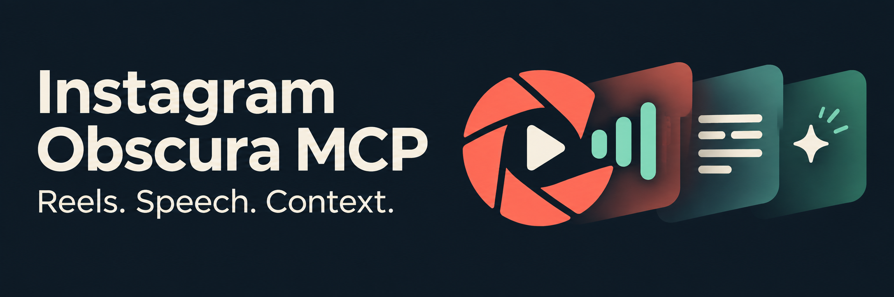
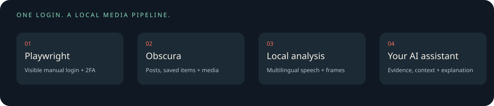

Reels с контекстом
Речь в оригинале, таймкоды и выборочные кадры дают ИИ факты для разбора.
Instagram · Model Context Protocol
Подключите обычный аккаунт Instagram к ИИ. Соберите сохранённые посты, многоязычную речь и кадры в понятный разбор.

От сохранения к пониманию
Речь в оригинале, таймкоды и выборочные кадры дают ИИ факты для разбора.
Читайте загруженное сохранённое, открывайте посты, сравнивайте подписи и слайды.
Ручной видимый вход, работа с аккаунтом через Obscura, локальные FFmpeg и Whisper.
«Открой сохранённое. Возьми первый Reel и объясни, что происходит и что говорят».
Пример поручения, без раскрытия реального аккаунта. Изображения анализирует и текст переводит ваш ИИ-клиент.

Playwright открывает видимое окно для ручного входа и 2FA, затем закрывается. Далее весь доступ к Instagram и CDN идёт через Obscura. Скрытой подмены браузера нет.
Установка из исходников · Python 3.12+
git clone https://github.com/votsie/instagram-obscura-mcp.git
cd instagram-obscura-mcp
python -m venv .venv
# Активируйте .venv, затем:
python -m pip install ".[analysis]"
instagram-mcp-doctorУстановите Chrome, FFmpeg, закреплённый бинарник Obscura и локальную многоязычную модель. Загрузки выполняются явно при установке, а не во время MCP-вызовов.
Открыть инструкцию ↗Экспериментальный неофициальный проект. С движком проверена Windows. Совместимость функций Instagram различается. Действия требуют конкретного поручения; прикрепление файлов по умолчанию выключено.
Нет. Это браузерный сценарий для личного аккаунта, а не интеграция Graph API.
Используется многоязычная Whisper с автоопределением. Покрытие и точность различаются; разбор, перевод и чтение кадров выполняет ИИ-клиент.
Есть примитивы интерфейса с проверкой аккаунта. Специальных API отправки и публикации нет; реальные отправки не тестировались при выпуске. Проверяйте каждую операцию.
В репозитории нет сессий, сохранённого или скачанного контента. Локальная среда сохраняет приватные cookies и результаты: защищайте её и ознакомьтесь с моделью угроз.
Каталог инструментов, навык, AGENTS.md и llms.txt описывают возможности и границы. Английский по умолчанию, полноценная русская версия рядом.